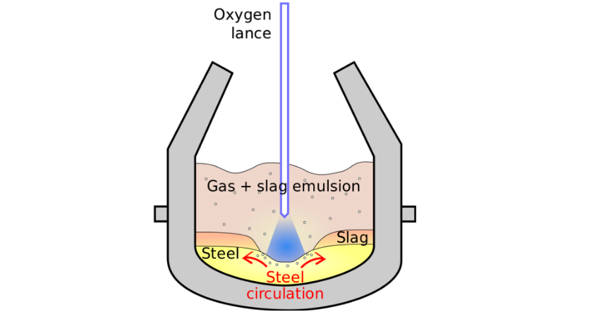
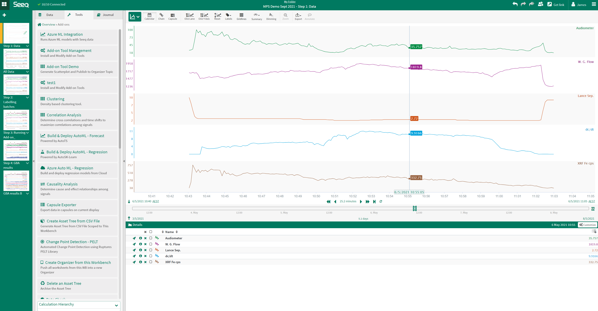
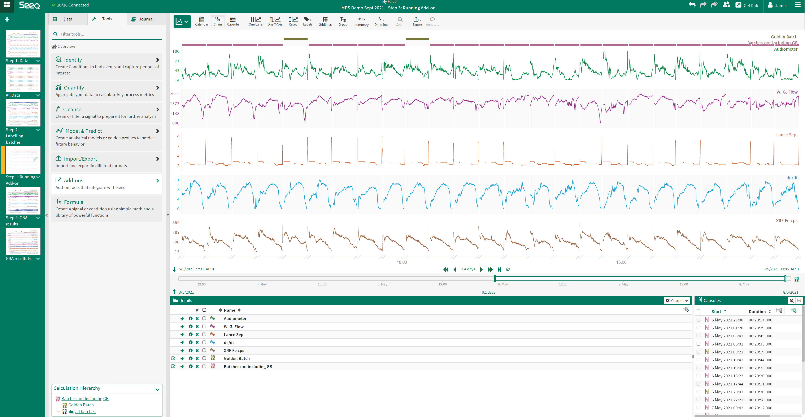
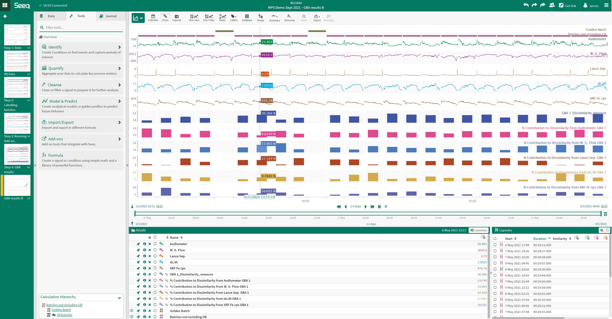
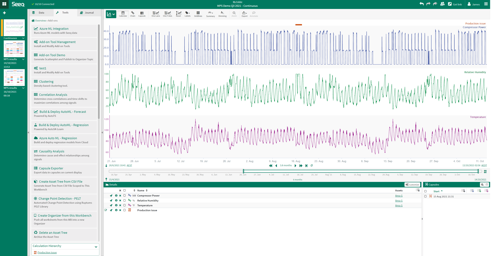
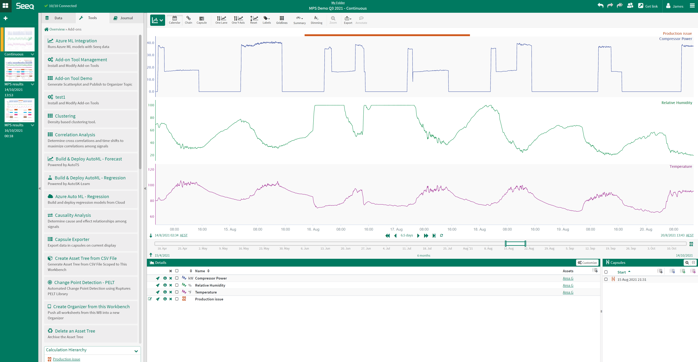
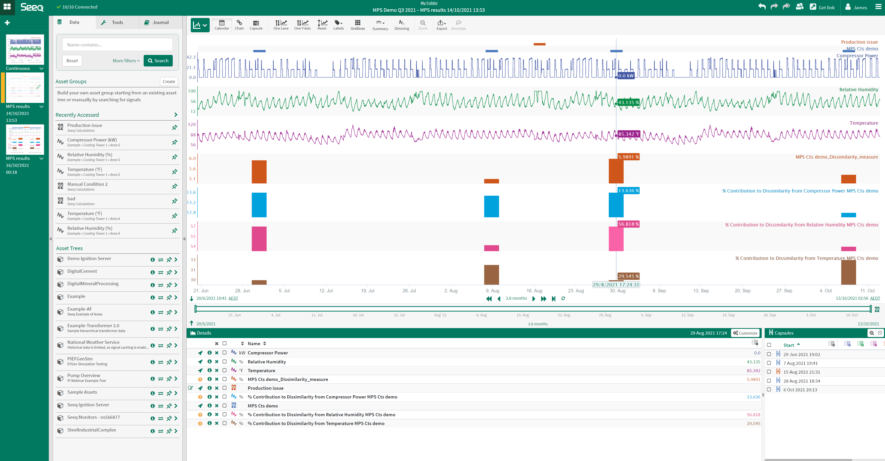
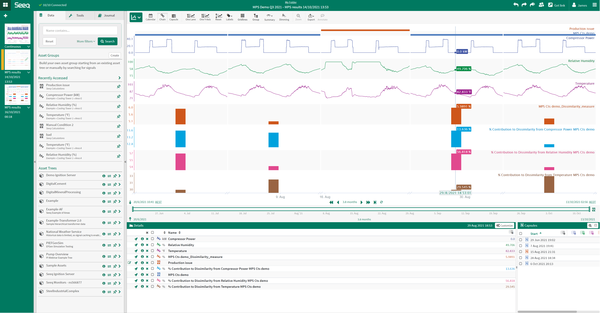

Example Use Cases
This set of use cases is a small subset of the typical types of analyses that can be conducted using the seeq-mps Add-on.
Example Use Case 1. Batch Mode: Golden batch analysis
This use case will display the seeq-mps Add-on ability to perform golden batch analysis.
The basic oxygen steelmaking (BOS) process converts pig iron into steel by blowing oxygen through a lance into the process vessel to remove carbon from the batch of iron. Figure 1 shows a diagram of a typical BOS process unit. The BOS dataset used for this use case comprises the following time series data shown in Figure 2:
Audiometer – audiometer reading, sensitive to the level of slag
W. G. Flow – waste gas flow rate (WGF)
Lance Sep – lance separation (height above the bath containing steel)
dc/dt – rate of carbon leaving vessel
XRF Fe cps – Xray fluorescence Fe in waste gas in counts per second
|  |
| Figure 1. Basic oxygen Steelmaking (BOS) process unit. |
|  |
| Figure 2. Basic oxygen Steelmaking (BOS) example signal trends for a single batch. |
Operators and engineers monitoring batch processes refer to a reference batch with optimal performance metrics a ‘golden
batch’, it is typical to review and compare every subsequent batch produced against this golden batch. Figure 3 shows
many batches of the BOS process with conditions indicating which batches are golden and which are batches to be assessed
in comparison (purple). The seeq-mps Add-on provides a comparison of each batch against the ‘golden batch’ set.
The enables batch assessments without having to wait for lab results for each new batch. Figure 4 below
displays the result output from the seeq-mps Add-on run in batch mode on this dataset. The blue bar signal shows the
output % dissimilarity measured by the Add-on, with all subsequent bar signals detailing each variable’s contribution to
the corresponding batch’s measured % dissimilarity.
|  |
| Figure 3. Basic oxygen Steelmaking (BOS) example signal trends all batches. |
|  |
| Figure 4. Basic oxygen Steelmaking (BOS) example with seeq-mps Add-on results. |
Insights gained:
Dissimilarity signal gives a quantitative measure of batch performance as soon as the batch is completed.
Variable contribution signals assist corrective action investigations by highlighting problem areas
Example Use Case 2. Continuous Mode: Bad actor search
This use case will display the ability of seeq-mps to search for similar process events for continuous processes.
A continuous process dataset from a Cooling Tower is used for this example, it comprises the following time series data shown in Figure 5:
Compressor power (kW)
Relative humidity (%)
Temperature (def F)
|  |
| Figure 5. Cooling Tower example signal trends. |
When a production issue occurs, it is often extremely valuable starting point for operations personnel to find other, similar instances in history. seeq-mps can help accelerate this search. The start and end time of the production issue is known and a condition is created to add context using Seeq Workbench. Figure 6 shows a zoomed view of Figure 5 to highlight the details in the known production issue condition (in this case a single capsule).
|  |
| Figure 6. Cooling Tower example production issue zoomed in. |
seeq-mps finds 4 other similar production issues in the dataset (shown in figures 7 and 8). The results are sent back to the user’s workbook as a new worksheet. Each identified event has a % dissimilarity value; this allows quick identification of events that have the same characteristics as the latest undesirable production event. Each signal has a % contribution value - this is the influence of the signal on the overall dissimilarity. The % contribution is useful to identify potential bad actors that may be good candidates to focus initial troubleshooting efforts.
|  |
| Figure 7. Cooling Tower example seeq-mps results. |
|  |
| Figure 8. Cooling Tower example seeq-mps results chain view. |